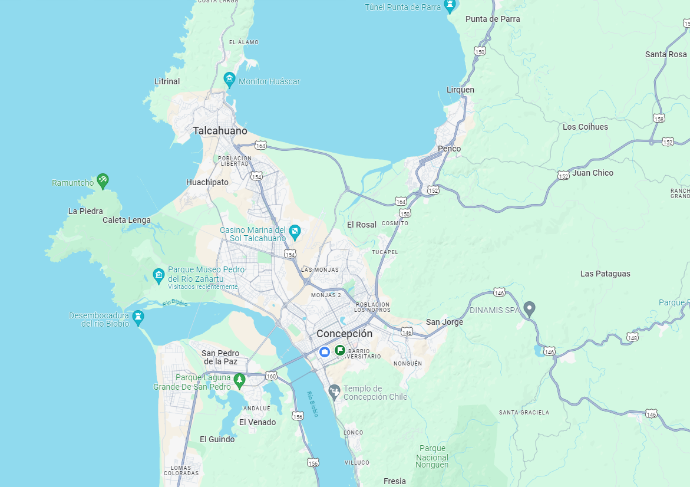
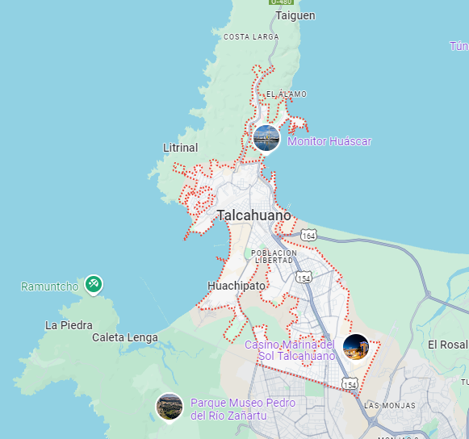
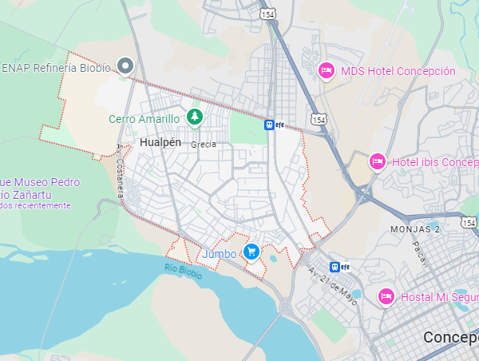
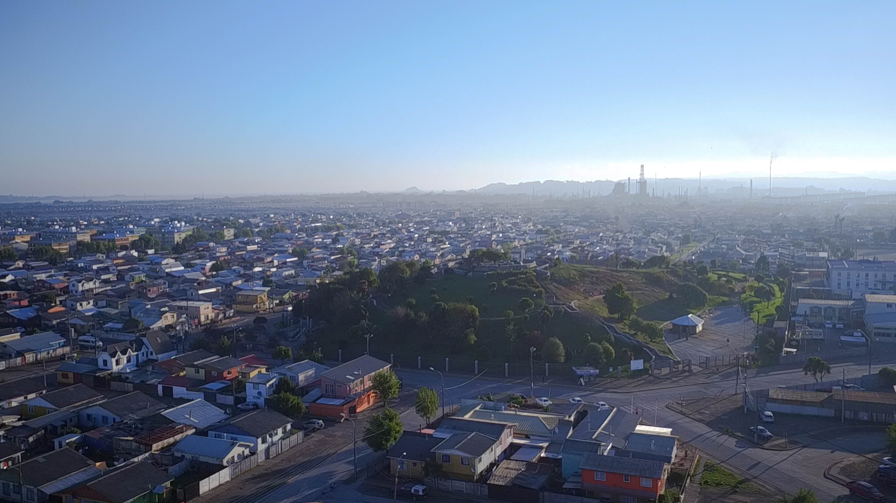
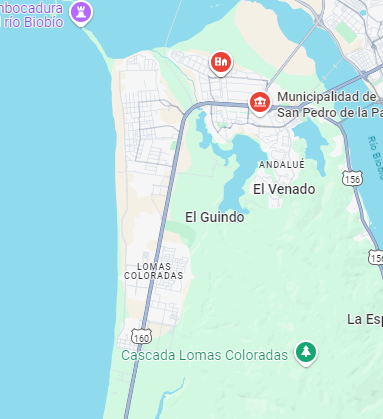
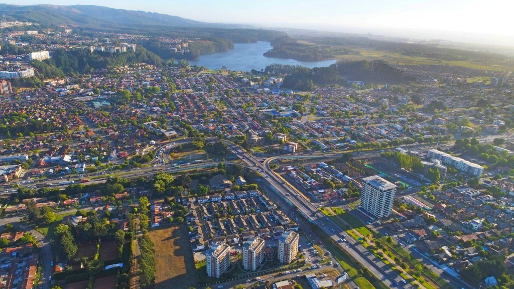
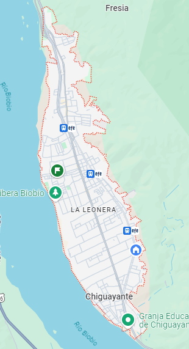
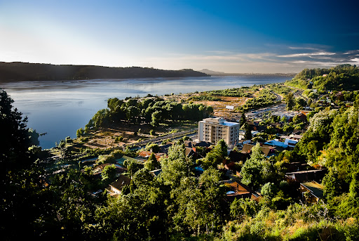
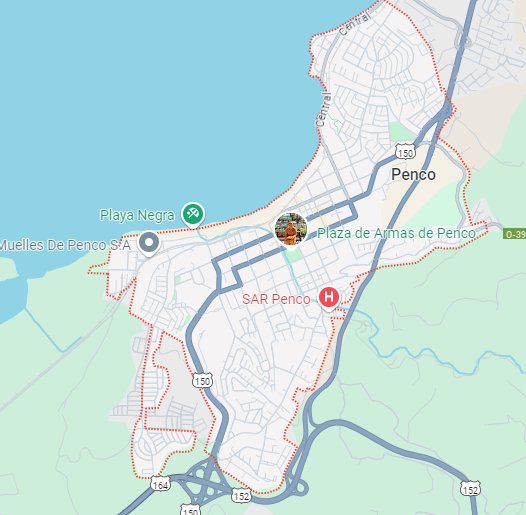
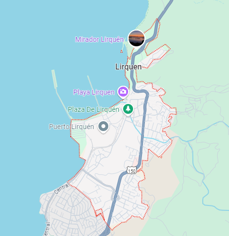

Concepción
Concepción es una ciudad ubicada en la región del Biobío, en la zona centro-sur de Chile. Es una de las ciudades más importantes del país, tanto por su tamaño como por su relevancia histórica, económica y cultural.

La ciudad es también conocida por su rica vida cultural, con numerosos teatros, museos, y galerías de arte. El Teatro Biobío es un punto destacado para la cultura y las artes escénicas.

Vista de Concepción
Talcahuano
Talcahuano es un centro industrial y portuario clave en Chile. El puerto de Talcahuano y el puerto de San Vicente son dos de los más importantes del país, manejando tanto carga nacional como internacional. La economía de la ciudad también se basa en la pesca, la construcción naval, y la industria metalúrgica.

En resumen, Talcahuano es una ciudad con una fuerte identidad marítima, una rica historia, y un papel crucial en la economía del sur de Chile. Su resiliencia y capacidad para reinventarse tras desastres naturales la han convertido en un ejemplo de superación y progreso en la región.
Hualpen
Hualpén fue establecida como comuna en 2004, separándose de Talcahuano. Antes de su creación como comuna, la zona era principalmente rural, pero con el tiempo, debido al crecimiento industrial y urbano de la región, se desarrolló en una ciudad con su propia identidad. Su historia está marcada por el desarrollo industrial, impulsado por la cercanía a Talcahuano y su puerto.

En resumen, Hualpén es una comuna que combina su legado industrial con un fuerte enfoque en la preservación de su entorno natural. Es un lugar que ofrece tanto oportunidades económicas como espacios para disfrutar de la naturaleza, siendo un ejemplo de cómo una ciudad puede crecer de manera sostenible en un entorno industrializado.

Foto panorámica de Hualpen.
San Pedro
San Pedro de la Paz tiene una historia que se remonta a la época colonial, cuando la zona era utilizada principalmente para la agricultura y la ganadería. Sin embargo, su desarrollo urbano moderno comenzó a acelerarse a fines del siglo XX y principios del siglo XXI, cuando la comuna empezó a atraer a familias que buscaban vivir en un entorno más tranquilo, alejado del bullicio del centro de Concepción.

En resumen, San Pedro de la Paz es una comuna que ha crecido rápidamente, convirtiéndose en un lugar residencial clave en la región del Biobío. Con su combinación de desarrollo urbano, entorno natural, y alta calidad de vida, es un lugar atractivo tanto para vivir como para visitar.

Foto panorámica de San Pedro.
Chiguayante
El nombre "Chiguayante" proviene del mapudungún, la lengua de los mapuches, y significa "lugar de neblinas" o "valle brumoso". La comuna tiene una rica historia vinculada a los pueblos indígenas que habitaron la zona antes de la llegada de los colonizadores españoles.

La calidad de vida en Chiguayante es alta, con acceso a buenos servicios de salud, educación, y transporte. La comuna ha logrado mantener un equilibrio entre el desarrollo urbano y la preservación de sus espacios naturales, lo que la convierte en un lugar deseable para vivir.

Foto panorámica de Chiguayante.
Penco
Penco fue fundada el 12 de febrero de 1550 por Pedro de Valdivia y es considerada una de las ciudades más antiguas del país. Originalmente, fue el lugar donde se estableció la ciudad de Concepción, pero debido a un terremoto en 1751 y al posterior tsunami, la ciudad fue trasladada al actual emplazamiento de Concepción.

En resumen, Penco es una comuna que combina su rica historia colonial con un entorno natural atractivo y una comunidad vibrante. Su desarrollo urbano y económico, junto con su compromiso con la preservación de su patrimonio, la convierten en un lugar destacado en la región del Biobío.

Foto panorámica de Penco.
Lirquén
Lirquén tiene una historia rica que está estrechamente ligada al desarrollo portuario e industrial del sur de Chile. A lo largo del siglo XX, Lirquén se convirtió en un importante centro industrial, especialmente en la industria del vidrio y la cerámica.

En resumen, Lirquén es una localidad con una fuerte identidad portuaria e industrial, rodeada de un hermoso entorno natural. Su puerto y su historia industrial han sido fundamentales en su desarrollo, y hoy en día, Lirquén continúa siendo un lugar importante para la economía regional, mientras ofrece a sus habitantes y visitantes un lugar atractivo para vivir y disfrutar del mar.